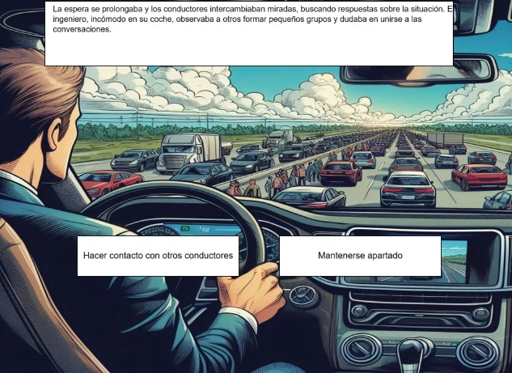
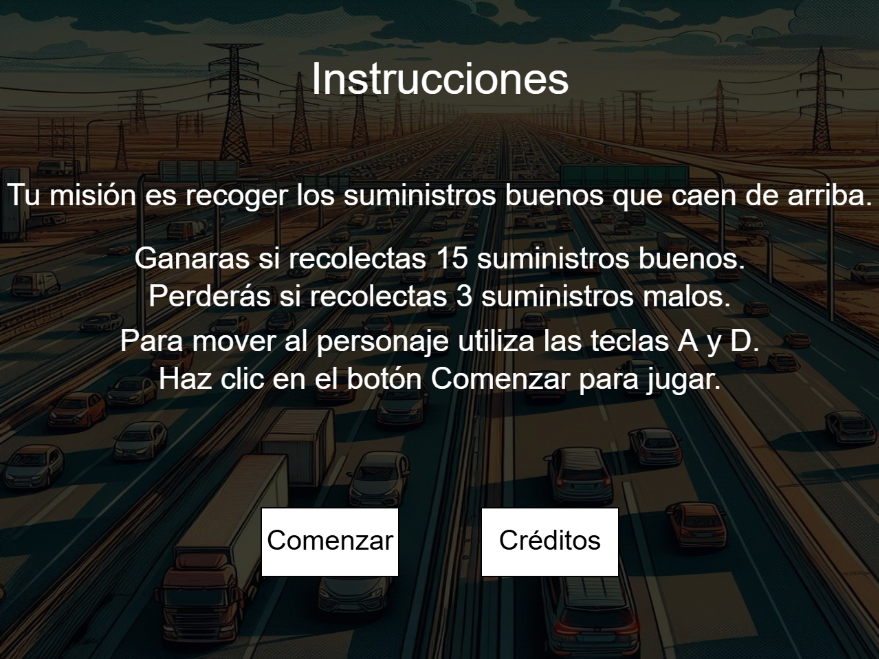
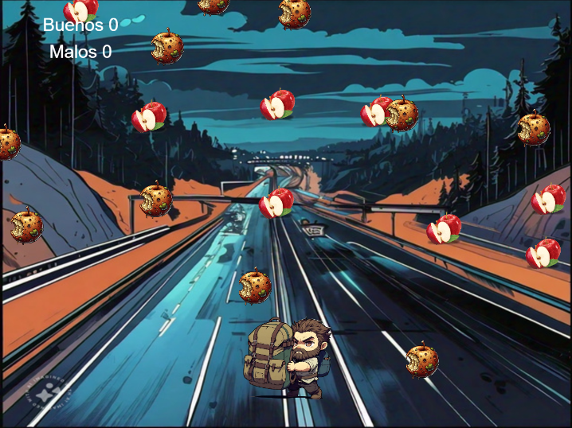
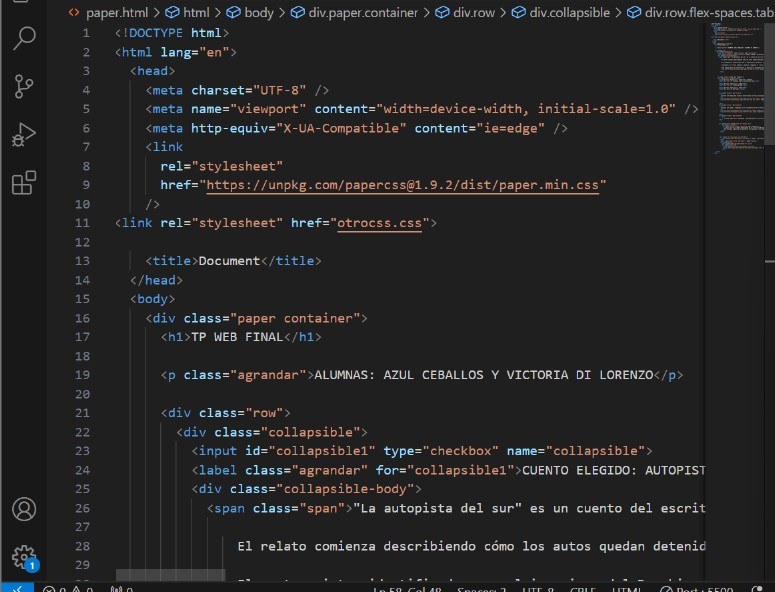
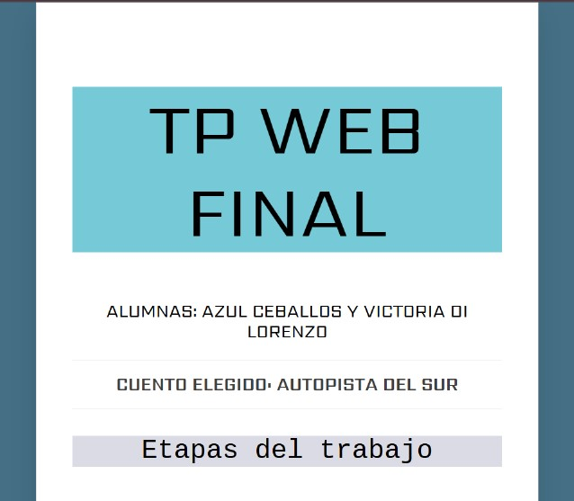

Durante esta etapa del proyecto desarrollamos el flujo principal del relato interactivo basado en “La autopista del sur” de Julio Cortázar, estructurándolo en 15 pantallas. Cada pantalla incluye textos narrativos adaptados que conservan la esencia del cuento, imágenes generadas con IA que reflejan el ambiente y los personajes, y zonas interactivas que permiten al usuario tomar decisiones clave para avanzar en la historia. Diseñamos tres finales alternativos, asegurando profundidad narrativa y fomentando la rejugabilidad, además de incluir una pantalla de créditos con nuestros nombres, el reconocimiento al autor original y las herramientas utilizadas.


Durante esta etapa, trabajamos en la incorporación de una funcionalidad lúdica dentro del flujo del relato, creando un minijuego que introduce un conflicto basado en el contexto de “La autopista del sur”. Diseñamos una situación problemática en la que el usuario debe tomar decisiones rápidas para resolver el conflicto (ganar) o fallar en el intento (perder). Este minijuego tiene instrucciones claras, un control para reiniciar, y está desarrollado en base a la Programación Orientada a Objetos con más de cuatro clases de objetos.


En esta etapa final, diseñamos e implementamos un sitio web que presenta nuestra aventura gráfica interactiva basada en “La autopista del sur”. El sitio contiene información detallada sobre la temática del proyecto, el proceso de producción y nuestro equipo, además de un acceso directo al videojuego desarrollado en la etapa anterior. Trabajamos para que el contenido reflejara de forma clara y atractiva la esencia de nuestro proyecto.

